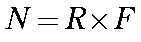
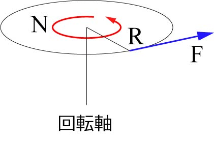
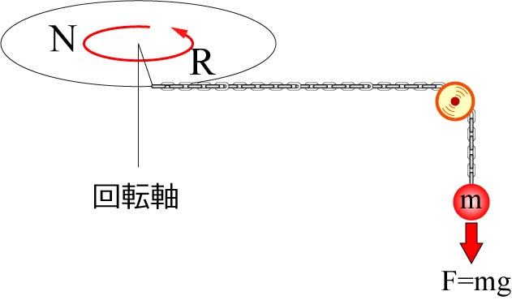
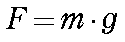
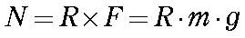

さて，もう一つ運動様式で有名なのが，”トルク“です．
これは回転力に使われるもので，回転軸にかかる力，回転させるために必要な力を指します．
ねじに固定されているボルトを直接手でゆるめるのは難しいけど，レンチなどを使うと楽に回せるように，回転軸からの距離が非常に重要なパラメータとなります．
トルクの定義は，

となります．
Ｎ：トルク [N・m]
R：回転軸からの距離 [m]
となります．
ここで，“×”は外積を指します．
まあ，回転軸と垂直に働く力なら単なるかけ算ですが．．．

つまり，同じ力でも，回転軸からの距離，R，が大きければトルクは大きくなり，回転力が増します．
レンチやねじ回しはこの原理を使って，大きな回転力を得ているのです．
タイヤのボルトを締める時などに使うトルクレンチはあるトルクの値を超えると，それ以上力がかからないようにして，一定のトルクをボルトに与えるものです．
さて，このトルクのはかり方ですが，以下のようなモデルを考えてみましょう．
トルク，Ｎ，を発生する軸からｒだけ離れたところに，ひもをつけ，その先におもりをつけます．

このひもには，

の力がかかります．
ここで，ｇは重力加速度としましょう．
この時のおもりを持ち上げる時に必要なトルクを上の式で表すことができます．
このおもりが下がりもせず，上がりもしない状態が最大発生トルク，となります．

次に，粘性抵抗からのトルクの見積もりを考えましょう．